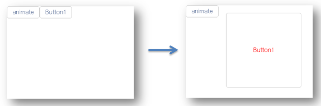
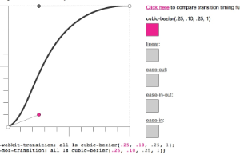
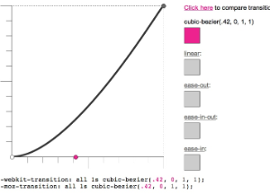
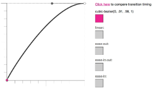
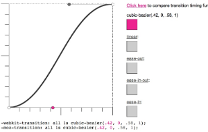
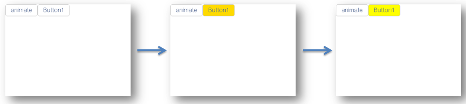

Mobello Animation은 css기반 animation을 지원합니다. 그리고 Animation의 타입을 3가지 타입으로 나눌수 있습니다. 첫번째는 tau.fx.Transition , 두번째는 tau.fx.Animation , 세번째는 built-in 입니다. 각각을 살펴보도록 하겠습니다.
목차:
현재 style에서 다른 style로 순차적 전환하여 애니메이션 효과를 나타나게 하는 클래스입니다. transition을 생성하고 스타일을 적용한 후, animate함수를 통해 target DOM에 애니메이션을 적용합니다.
아래의 그림처럼 애니메이션을 하기 위한 소스는 아래에 있습니다.

var tran = new tau.fx.Transition({duration: "1000ms"});
tran.setStyle("width", "150px");
tran.setStyle("height","200px",{timingFunction : "cubic-bezier(0, 1, 0, 1)", duration: "1500ms"});
tran.setStyle("color","red",{timingFunction : "ease-out", duration: "1500ms"});
tran.setStyle("margin","20px",{timingFunction : "ease-out", duration: "1500ms"});
tran.setStyle("padding","20px",{timingFunction : "ease-in", duration: "1500ms"});
tran.animate(Button1.getDOM());//Button1에 transition을 적용한다.
| defaultease  | ease-in  | ease-out  | ease-in-out  | 서로 다른 위치에 있는(discrete) N개의 조절점에 의해 얻어지는 곡선을 구하기위한 연속함수입니다. |
|
구간별로 style을 지정하여 애니메이션 효과를 나타나게 하는 클래스입니다. Transition 클래스와 다르게 반복 횟수, 애니메이션 후 원상태 복귀여부, delay 옵션등 여러 추가적인 옵션이 더 있습니다. Animation클래스를 생성하고 from, to속성을 설정한 후 옵션을 설정한 다음, animate함수를 통해 target DOM에 애니메이션을 적용합니다.
아래의 그림처럼 애니메이션을 하기 위한 소스는 아래에 있습니다.

var ani = new tau.fx.Animation({
from : {'background': 'red'},
to : {'background': 'yellow'}
}, {
timingFunction : 'ease-out',
duration : 2500, //시간 경과 설정
override : true, //애니메이션한 후 속성 유지
iterationCount : 2, //반복횟수
delay : 1000 //지연시간후 애니메이션 동작
});
ani.animate(Button1.getDOM());
|
자주 사용되는 애니메이션을 미리 구현한 함수들입니다. 현재 tau.fx.fadeIn 와 tau.fx.fadeOut 이 있다. 추가적인 애니메이션은 추후에 추가될 것 입니다.
아래의 그림처럼 애니메이션을 하기 위한 소스는 아래에 있습니다.

tau.fx.fadeIn(Button1.getDOM(),{duration : 500}); //Button1은 초기에 display none속성으로 있음
tau.fx.fadeOut(Button2.getDOM(),{duration : '1s'});
|